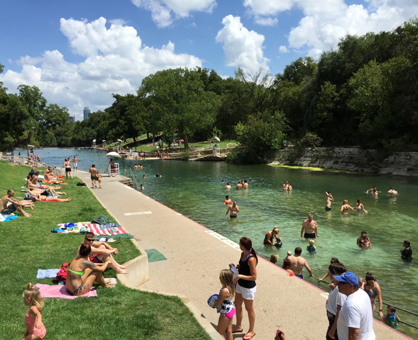
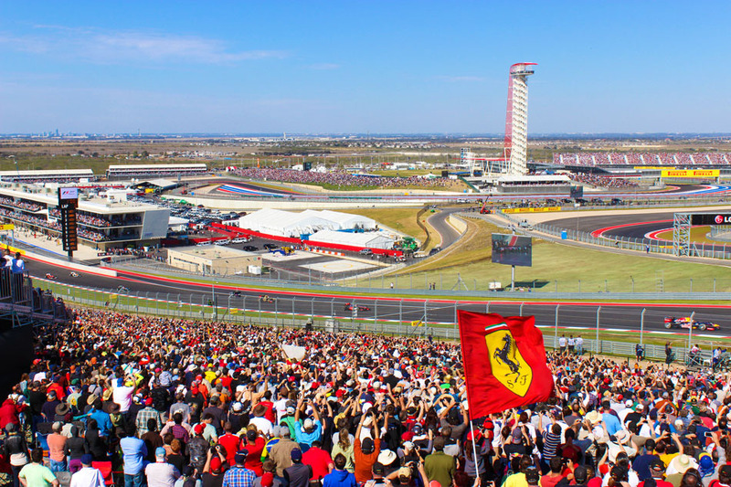
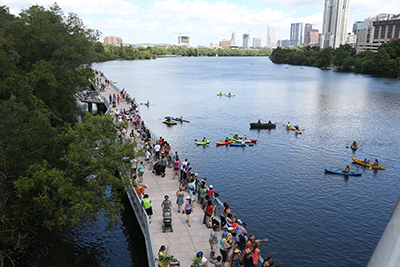
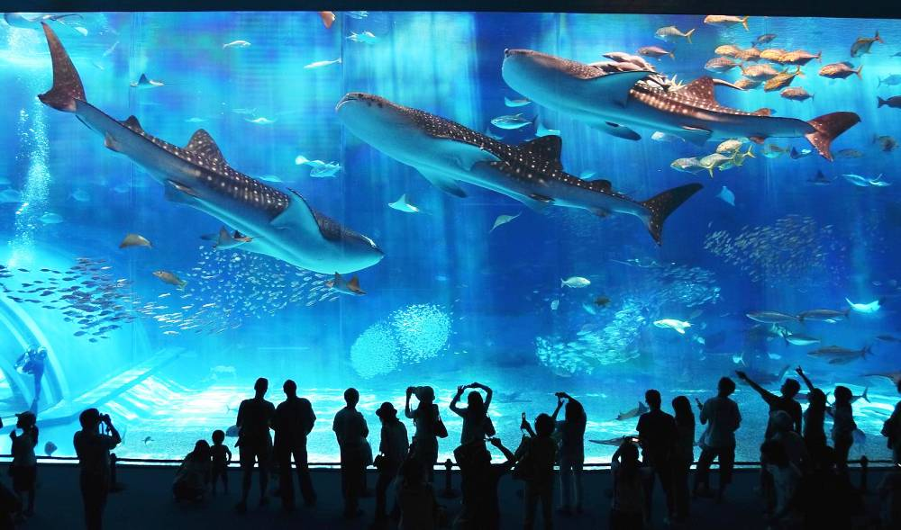

Are you visting Austin TX Soon? Here are unique spots that make you trip one to remember!
TOP 4!
By Jorge Llanes
BARTON SPRINGS POOL

A picture of Barton Springs
Barton springs pool is the PERFECT summer activity. Its the best combo to sit back & relax or enjoy a swim with family and friends, All ages are WELCOMED!. Tons of space, the pool itself measures THREE ACRES LONG!, And Entry fees range from $2-$5.
CIRCUIT OF THE AMERICAS

A picture of COTA
The ultimate destination for racing and entertainment. Great place to enjoy a competitive formula 1 race and have a race of your own at COTA Karting. Fun place to socialize and enjoy yourself with family and friends. All ages our welcomed & entry fees range from $100-$180.
LADY BIRD LAKE / TRAILS

A picture of Lady bird lake
Lady bird lake is the perfect combo of enjoying time walking/Jogging or Paddle boarding with family and friends. It overseas the infamous ATX Skyline. All ages are welcomed and Paddle boarding fee is only $10!!
AUSTIN AQUARIUM

A picture of Austin Aquarium
The Austin Aquarium offers amazing activities for your family and friends. Its a great place to learn about the ocean life, and you're able to feed sharks, rays, birds and fish, all ages are welcomed and entry fees range $8-$15.